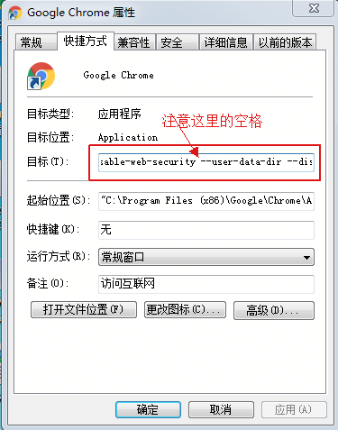

在前后端分离的开发模式中，因为浏览器的同源策略，经常会涉及到跨域调用接口的问题。那么今天我们就聊聊，什么是同源策略，如何解决跨域的问题，都有哪些方法，这些方法之间有哪些区别？
同源策略（Same origin policy）是一种约定，它是浏览器最核心也是最基本的安全功能。
所谓同源是指，协议，域名，端口相同。
jsonp 是通过传递一个 callback 参数给跨域服务端，然后跨域服务端返回数据时会将这个 callback 参数作为函数名包裹住 json 数据即可，且只支持 get 方法。
// 回调执行函数
function onBack(res){
console.log(res);
}
let script = document.createElement('script');
script.src = 'http://localhost:3000/jsonp?callback=onBack';
document.body.appendChild(script);
let qs = require('querystring');
let http = require('http');
let server = http.createServer();
server.on('request', function(req, res){
let params = qs.parse(req.url.split('?')[1]);
let data = {"name": "jsonp"};
res.writeHead(200, {'Content-Type': 'text/javascript'});
res.end(params.callback + '(' + JSON.stringify(data) +')');
});
server.listen('3000');
console.log('Server is running at port 3000');
CORS：（Cross-Origin Resource Sharing）跨域资源共享，get、post 都支持。
普通的跨域请求，只需要服务端设置 Access-Control-Allow-Origin 即可，前端无须设置。
若是需要带着 cookie，则需要前后端都要设置，配置 credentials。因为同源策略的现在，cookie 为跨域请求所在的 cookie，而不是当前页。如果想实现当前页的 cookie 写入，可设置 nginx 的反向代理。
var xhr = new XMLHttpRequest();
// 前端设置是否带cookie
// xhr.withCredentials = true;
xhr.open('post', 'http://localhost:3000', true);
xhr.send('arg=cors');
xhr.onreadystatechange = function() {
if (xhr.readyState == 4 && xhr.status == 200) {
alert(xhr.responseText);
}
};
let qs = require('querystring');
let http = require('http');
let server = http.createServer();
server.on('request', function(req, res){
let postData = '';
// 数据块接收中
req.addListener('data', function(chunk){
postData += chunk;
});
// 数据接收完毕
req.addListener('end', function(){
postData = qs.parse(postData);
// 跨域后台设置
res.writeHead(200, {
'Access-Control-Allow-Credentials': 'true',
'Access-Control-Allow-Origin': '*',
});
res.end(JSON.stringify(postData));
});
});
server.listen('3000');
console.log('Server is running at port 3000');
右键打开 Chrome 桌面快捷方式（已打开的 Chrome 网页请先关闭），点击“属性”进入到“快捷方式”选项卡，再选中“目标”项，添加“ --disable-web-security --user-data-dir”；点击确认后，关闭浏览器，再启动 Chrome 浏览器即可。如下图所示

通过设置 nginx 的反向代理，代理服务端接口地址。然后用本地应用访问 nginx 对外的地址即可。
server {
listen 80;
server_name '本地域名地址';
location / {
proxy_pass '请求跨域的域名和端口号';
add_header Access-Control-Allow-Origin '*';
add_header Access-Control-Allow-Methods 'GET, POST, OPTIONS, PUT, DELETE';
add_header Access-Control-Allow-Headers 'Content-Type';
add_header Access-Control-Allow-Credentials true;
}
}
在实际的项目开发过程中，各位同学可以根据项目中的场景去选择使用哪种方式解决跨域的问题。